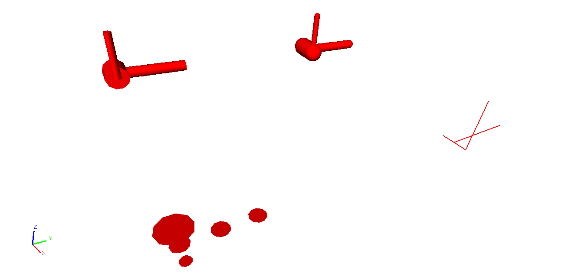

Moogli
Introduction
Moogli (a sister project of MOOSE) is a simulator independent openGL based visualization tool for neural simulations. Moogli can visualize morphology of single/multiple neurons or network of neurons, and can also visualize activity in these cells.
Moogli is like VLC player for neural simulations.
Installation
Additional Software
- python2.6/2.7
- PyQt4
- hdf5
- matplotlib
- mencoder
- libQGLViewer-2.3.15-py & install instructions here
- PyQGLViewer0.10 (first install libQGLViewer-2.3.15-py) and untar contents
cd / PyQGLViewer0.10
>python setup.py build # to compile
>python setup.py install # to install on your system
>python setup.py bdist # to create a binary distribution
Get Moogli
Download and unzip Moogli from git repo
Run Moogli
In terminal, cd to location of unzipped Moogli folder (/Moogli)
>python moogli.py
You will see an white screen with axes on the bottom left.
Supported Formats

Input Formats
Currently .xml (MorphML/NeuroML), .csv for visualizaing morphology of cells The .p file format is in development
The format currently employed for data visualization is hdf5. The file structure includes morphology of the cell(s) being visualized. Currently support Morphml (.xml) Neuroml(.xml) and .csv
Moogli now also supports .csv for data visualization. See /samples/timeSeries.csv for example
In future: Employ a standard format for data visualization. Also plans to include electrophys file formats.
Currently: Testing neo compatibility and auto placement of cells.
Save as formats
Save screenshot (.png) of the current display.
Save as movie (.avi) for data visualization. [Users will be able to 'direct' their movies soon]
Defaults
Refer to /Moogli/defaults.py file (the file is self explanatory via comments)
- Background color of the scene.
- To draw the cells using default settings.
- To visualize the cells using default settings.
- To use default binning properties.
- Speed of visualization updation.
- FPS/height/width when saving as .avi
Keyboard & Mouse shortcuts
Keyboard - User can bring this up by hitting 'H' key

Mouse - User can bring this up by hitting 'H' key

Additionally:
Control + O : Open File
Control + S : Save As
Control + Q : Quit
Spacebar : Play/Pause Visualization
Use Cases
Inspect morphology of cell
File>Open> (/Moogli/samples/mitralCell.xml)

Above prompt is only seen when DEFAULT DRAW is False
Selecting to draw all compartments (Button labeled 'A') as cylinders and click 'OK'
alternatively, if not sure
Click 'Use Defaults'
Result:

Try displaying some of the compartments in a cell as cylinders and others as capsules.
Display multiple copies of same cell
File>Open> (/Moogli/samples/cablesIncludedExtended.csv)
Accomplished by giving an offset position in the style selection prompt
Result:

Visualizing Parameters
File>Open> (/Moogli/samples/mitral.h5)
The hdf5 file has the data only for 3 compartments. Moogli can handle partial data. Here showing default visualization.
Result:

More later …
TO DO
Network Level
There is also the case of visualizing large network of neurons(1000's) In which case, the morphology of individual cell is ignored, and each neuron is represented as spheres/disks which are placed according to a graphviz like algorithm depending on connectivity. (Also support for NetworkML)
In this case, the data may be only spike timing data. But the tree structure of the previous case is still adhered and the connectivity between compartments is stored as text arrays inside hdf5 file itself.
Formats
Employ a standard format for data, HDF5 format ( NeuroHDF? ) Support additionally Electrophys file formats ( neo? ) Support .p file formats
Direction of movie output - cleaner ways to do it - a possible demo?
Examples
More examples /use cases for documentation
Packaging
Easy to install packaging. Specific to each OS.
Additional Information
New Color Maps
If one needs to add other colormaps to the existing, generate a list of color values (rgb) scaled to 1 (ie 0 to 255 = 0 to 1) and pickle this list. Ensure no name conflics when naming the file. Now add this pickled file in the /Moogli/openGLHeaders/colormaps folder. In addition use the script /Moogli/icons/makeColorMap.py to generate an icon for the colormap.
HDF5

For single/multiple neurons, the data itself is stored in arrays, following a strict tree structure. For example,
filename.h5>cellName>compartmenName>propertyName
corresponds to the arrayof values of that property (can be membrane potential / Ca concentration etc) over time. This is because, it gives an easy intuitive handle to the data.
Known Issues
- Drawing of cylinders/capsules at some times, would show up as discontinous elements.[NOW FIXED]
Issue: Drawing of cylinders in OpenGL has an issue Ref: /Moogli/openGLHeaders/objects.py
Current fix: Draw as Ball&Sticks instead [THIS IS FIXED NOW]
FAQ
Q. Would Moogli support some specific file format?
A. The idea is to have as many supported formats as possible. Eventually that is.
Q. I was able to see the cell initially, I zoomed out/in, now I do not see the cell!
A. In the /Moogli folder look for ".MoogliState.xml" file and delete it. This arises because
of no limitation on zooming.
More later …
Acknowledgements
Upinder S. Bhalla, Subhasis Ray, Niraj Dudani, Aditya Gilra of NCBS for feedback and encouragment.
Developers of libQGLViewer and its python bindings by Frederic Boudon.
Harsha and punch for the website
Collaborate
We welcome you to collaborate on this project. Please send us your details, and how you can contribute.
Contact
Upinder S. Bhalla : bhalla[at]ncbs[dot]res[dot]in
C Hanuma Chaitanya : chaitanyah[at]ncbs[dot]res[dot]in